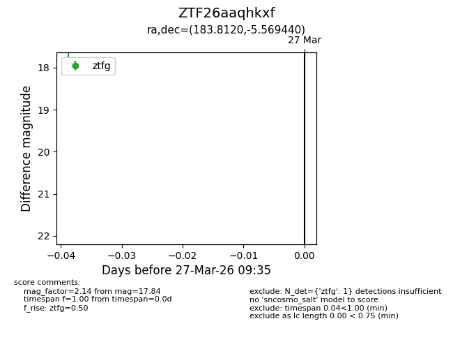
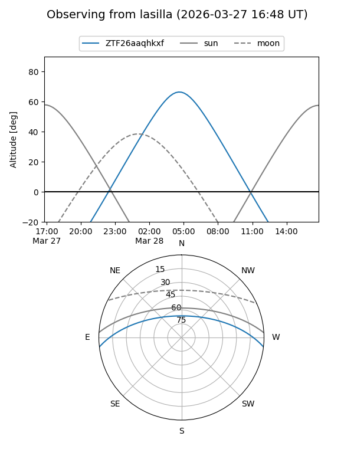
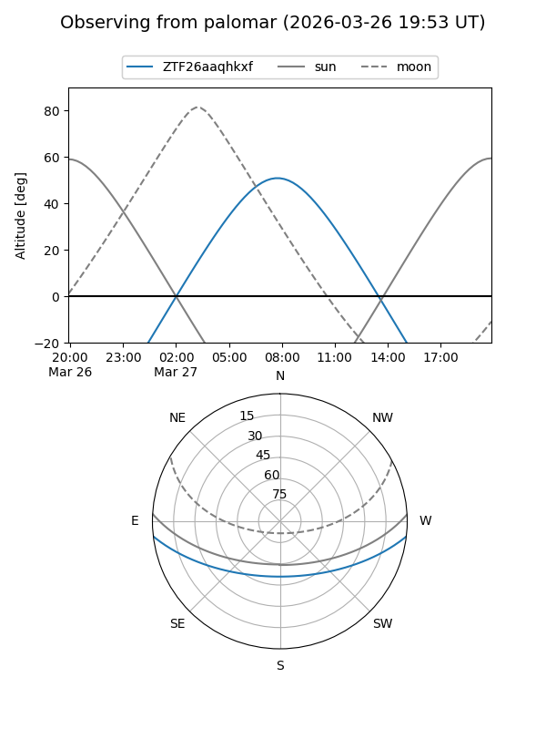

ZTF26aaqhkxf
Target ZTF26aaqhkxf at 2026-03-27 09:38
Aliases and brokers:
FINK: link
Lasair: link
ALeRCE: link
alt names
ZTF26aaqhkxf (ztf,fink_ztf)
Coordinates:
equatorial (ra, dec) = 183.8120,-5.56944
equatorial (HMS+DMS) = 12:15:14.87,-05:34:09.99
galactic (l, b) = (286.6127,+56.15135)
Flags:
Photometry:
last ztfg=17.84
1 ztfg detections
Lightcurve

Visibility


Additional plots